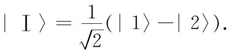
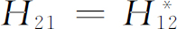

上一章我们在把氨分子看作双态系统的近似下讨论了氨分子的一些特性。当然，氨分子实际上不是双态系统——还存在着转动、平动、振动等等许多状态，但由于氮原子的上下翻转，这些运动状态的每一个都要分解成两种内部状态。这里，我们要考虑在某种近似下可视为双态系统的另一些例子。有许多问题都是近似的，因为总是有许多其他状态存在，在更精确的分析中应当把它们考虑进去。但在所举的每个例子中，仅仅考虑两个状态我们还是能学到许多东西。
因为我们只处理双态系统，所以所需要的哈密顿就与上一章所用过的一样。当哈密顿与时间无关时，我们知道有两个具有确定——通常不相同的——能量的定态。我们的分析所用的一组基础态通常不是 这些定态，而是可能具有其他某种简单物理意义的态。于是，系统的定态将用这些基础态的线性组合来表示。
为方便起见，我们总结一下第9章中重要的方程式。设原来选取的基础态是｜1〉及｜2〉。那么任何态｜ψ 〉可以表示为如下的线性组合
振幅C i （就是指C 1 或C 2 ）满足两个线性微分方程
这里i 与j 都取值1及2。
当哈密顿的各项H ij 不依赖于t 时，具有确定能量的两种状态（定态），即我们称为
的状态具有能量
这两种状态的两个振幅C 具有相同的时间的依赖关系。与定态相联系的态矢量｜Ⅰ〉及｜Ⅱ〉与原来的基础态｜1〉及｜2〉之间有以下关系
这些a 都是复数，它们满足
如H 11 与H 22 相等——比方说都等于E 0 ——而H 12 ＝H 21 ＝－A ，那么E Ⅰ ＝E 0 ＋A ，E Ⅱ ＝E 0 －A ，从而态｜Ⅰ〉及｜Ⅱ〉就特别简单：
现在我们要利用这些结果来讨论一些取自化学和物理学领域中的有兴趣例子。第一个例子是氢分子的离子，一个带正电的电离氢分子由两个质子及一个电子组成，这个电子在两个质子周围运行。如果两个质子相离很远，我们预期这样的系统会有什么状态呢？答案很清楚：电子将靠近一个质子而形成一个处于最低能态的氢原子，而另一个质子则独自成为一个正离子。所以，如果两个质子离得很远，我们可想象这样一种物理状态，即电子“附着”在其中一个质子上。显然，还有另一种与之对称的状态，即电子靠近另一个质子，而第一个质子就成为一个离子。我们将取这两种态作为基础态，而称它们为｜1〉及｜2〉。两种态画在图10-1中。当然，一个电子靠近一个质子的状态实际上有许多，因为这种组合可以以任何一种氢原子的激发态存在。目前我们对这些各种各样的态并不感兴趣；我们只考虑氢原子处在最低能态——基态——的情况，而且我们暂时不考虑电子的自旋。我们可以假设在所有状态中电子都具有沿z 轴 (1) “朝上”的自旋。
图10-1 两个质子及一个电子的一组基础态
从氢原子中移去一个电子需要13.6eV能量。只要氢分子离子的两个质子相距很远，将电子移至靠近两质子中点某处也差不多需要这么多能量——在我们现在的问题中这是很大的能量。所以从经典物理的观点来看，电子从一个质子跳往另一个质子是不可能的。然而，在量子力学中这是可能的——尽管可能性不很大。仍有一定的小的振幅使电子从一个质子跑向另一个质子。作为第一级近似，我们令每个基础态｜1〉与｜2〉都有能量E 0 ，这正是一个氢原子加一个质子的能量。我们可以取哈密顿矩阵元H 11 与H 22 都近似等于E 0 。对另外的矩阵元H 12 与H 21 （它是电子往来跳动的振幅）我们仍记为－A 。
你们会发现这里的事情与上两章所玩的是同样的把戏。如果不考虑电子能够来回跳动的事实，我们就有能量完全相同的两个态。然而，由于电子有来回跳动的概率，这个能级就分裂为两个能级，跃迁的概率越大，分裂就越大。这样，系统的两个能级就是E 0 ＋A 及E 0 －A ，带有这两个确定能量的状态就由式（10.7）给出。
从解答中我们看出，如果使质子与氢原子靠近，电子就不会总待在其中一个质子一边，而要在两个质子间来回跳动。如果它开始处在其中一个质子旁，那它就将在态｜1〉及｜2〉之间来回振荡，即给出一个随时间变化的解。为了得到最低能量的解（这解不随时间变化），开始时此系统中的电子围绕各个质子的振幅就必须相等。记住，这里不是两个电子——我们并没有说围绕每个质子各有一个电子。总共只有一个 电子，它 在任一个质子旁的位置上都具有相同的振幅，其大小为 。
本来靠近一个质子的电子跑到另一个质子旁的振幅A 依赖于质子之间的距离。质子靠得越近，振幅就越大。你们记得我们在第7章中谈到过在经典（观念）上不可能有电子“穿透势垒”的振幅。这里我们有同样的情况，电子穿透的振幅在距离大时大致上随距离增大而指数式减少。既然质子靠近时跃迁概率（从而A ）变大，能级的分离也就增大。如果系统在态｜Ⅰ〉，能量E 0 ＋A 随着距离的减小而增大，所以这样的量子力学效应将产生一种排斥 力使质子分离。相反，若系统处在态｜Ⅱ〉，那么如让质子靠近，总能量将减少 ；有个吸引 力将质子拉到一起。两种能量随质子之间距离而变化的情况大致如图10-2所示。于是我们对使 离子结合在一起的结合力就有了一个量子力学解释。
图10-2 离子两种定态能量作为两个质子间距离的函数
但是，我们忘了一件事。除了我们刚才所描写的力外，在两个质子间还存在着静电斥力。当两个质子相隔较远时——如图10-1中的那种情况——“裸”质子只见到一个中性原子，因此静电力可以忽略不计。但当距离十分靠近时，“裸”质子开始进入电子的分布区“内部”，就是说，平均而言，氢原子核离另一个质子比离电子为近。这样便开始出现一些额外的静电能，当然是正的。这个能量——也随距离而变化——应包括在E 0 之中。所以我们应当取图10-2中的虚曲线表示E 0 ，当距离小于氢原子半径时，它迅速上升。我们应当由E 0 加上及减去翻转能量A 。这样做以后，能量E Ⅰ 及E Ⅱ 就将如图10-3所示那样随着质子间距离而变。［在这个图上我们画的是经过更详细计算的结果。质子间距离以1nm（10－9 m）为单位标出。超过一个质子加上一个氢原子的能量ΔE ，则以氢原子束缚能——所谓“里德伯”能量E H 13.6eV——为单位标出。］我们看到态｜Ⅱ〉有一个能量极小点，这就是 离子的平衡位形，即最低能量态。这点的能量低于一个分离的质子与一个氢离子的能量，所以系统是束缚着的。单个电子起着使两个质子结合在一起的作用。化学家称之为“单电子键”。
图10-3 离子能级作为质子间距离D 的函数（E H ＝13.6eV）
这类化学键联也常称为“量子力学共振”（用我们先前描述过的两个耦合着的单摆作类比）。但这种称呼听起来比事情本身更神秘些。其实，只有当你从对基础态的不恰当选择出发——正如我们也做过的那样，它才“共振”！假如你选了态｜Ⅱ〉，你就会有最低的能态——情况就是如此。
我们可以用另一种方式来看一下为什么这样一个状态具有比一个质子与一个氢原子低的能量。让我们设想一个电子靠近彼此相距某个固定但不太远的距离的两个质子。你们还记得，当只有一个质子时，由于不确定性原理，电子是“弥散”的。电子在具有低的库仑势 能和不要被束缚在太小的空间两者之间寻求一种平衡。因为由于不确定性关系（ ），电子被束缚在小的空间内则它的动能就要增高。如果有两个质子，就有更多的空间使电子具有较低的势能。它可以在不加大势能的条件下弥散开来——从而降低动能。净结果就是得到低于一个质子和一个氢原子的能量。那么为什么另一种态｜Ⅰ〉具有较高能量？请注意，这个态是态｜1〉及｜2〉的差。由于｜1〉及｜2〉的对称性，它们的差使得在两个质子的半当中找到电子的振幅必定为零。这意味着电子在某种程度上被束缚得更紧，这就导致较大的能量。
应该指出，一旦两个质子之间的距离近到图10-3中曲线的极小值时，把 离子视为双态系统的近似处理就完全失效了，因而这时不能得到实际结合能的精确值。对于小间距，我们在图10-1中所设想的两种“态”的能量不再恰好等于E 0 ，需要一种更精确的量子力学处理方法。
假定我们现在问，如果不是两个质子，而是两个不同的客体，比方说一个质子与一个正的锂离子（两个粒子仍都带有单位正电荷），情况又会怎样？在这种情况下，两项哈密顿量H11 与H 22 不再相等；事实上，它们将很不一样。如果出现了差（H 11 －H 22 ）的绝对值远大于A ＝－H 12 的情况，吸引力就变得非常微弱，这可由下面看出。
如果将H 12 H 21 ＝A 2 代入式（10.3），就有
当（H 11 －H 22 ）2 远大于A 2 时，平方根就近似地等于
于是两个能量就是
它们非常接近于孤立原子的能量H 11 与H 22 ，只是由于翻转振幅A 而略有差别。
能量差E Ⅰ －E Ⅱ 是
来自电子振荡的附加 能级分裂不再等于2A ，而小了一个因子A /（H 11 －H 22 ），该因子我们现在假设为远小于1。此外，E Ⅰ －E Ⅱ 对两个原子核间距的依赖关系也比 离子小得多——也减小因子A /（H 11 －H 22 ）。现在我们明白了为什么不对称双原子分子的键联一般很微弱。
在我们的 离子理论中我们已经发现了对两个质子共有的一个电子实际上提供了两质子间的吸引力这种机制的解释，这种吸引力即使在质子相距较远时也能存在。此吸引力来自电子从一个质子跳到另一个质子的可能性所造成的系统能量的减少。在这种跳跃过程中，系统由一种位形（氢原子，质子）变到另一种位形（质子，氢原子），或者反过来。我们可以用符号来表示这种过程
由于这个过程产生的能量偏移正比于振幅A ，A 即能量为－W H （电子在氢原子中的结合能）的电子可从一个质子跑到另一个质子的振幅。
当两个质子的间距离R 较大时，电子在其跳跃过程中必须通过的大部分空间中静电势能都接近于零。因而在这些地方，电子就像自由粒子在真空中那样运动——但带有负 的能量！我们在第3章式（3.7）中已知道，具有确定能量的粒子从一个地点跑到距离r 的另一地点的振幅正比于
这里p 是与确定能量对应的动量。在现在的情况下（用非相对论公式），p 由下式给定
这意味着p 是虚数，
（带负号根式在这里没有意义。）
于是我们预期，当两个质子间距离R 大时， 离子的振幅A 将按下式变化
由电子键联而产生的能量偏移正比于A ，于是就有一个力将两个质子拉近，此力在R 大的情况下正比于式（10.10）对R 的导数。
最后，为完备起见，我们应当指出对双质子和单电子的系统还有另一种给出能量对R
相关的效应。迄今为止我们都忽略了这点，因为通常它是不很重要的——例外只在距离很大时出现，这时交换项A
的能量已指数地衰减为很小的值。我们所考虑的新效应是质子对氢原子的静电吸引，这种吸引的产生方式与任何带电体吸引一个中性物体的情况一样。裸质子在中性氢原子处产生一个电场 （随1/R
2
变化）。原子便极化而形成一个正比于
的感生偶极矩μ
。偶极子的能量是μ
，它正比于
2
或1/R
4
。因而在系统的能量中有随距离的4次方而衰减的一项。（它是对E
0
的校正。）此能量随距离的减少比式（10.10）给出的A
的改变来得慢；在大距离R
处它就成为仅剩的给出能量随R
而变的重要项，因此也就是仅剩的力。注意对两个基础态来说静电项都有相同的符号（力是引力，故能量为负），对两个定态也是如此，而电子交换项A
对两种定态则给出了相反的符号。
（随1/R
2
变化）。原子便极化而形成一个正比于
的感生偶极矩μ
。偶极子的能量是μ
，它正比于
2
或1/R
4
。因而在系统的能量中有随距离的4次方而衰减的一项。（它是对E
0
的校正。）此能量随距离的减少比式（10.10）给出的A
的改变来得慢；在大距离R
处它就成为仅剩的给出能量随R
而变的重要项，因此也就是仅剩的力。注意对两个基础态来说静电项都有相同的符号（力是引力，故能量为负），对两个定态也是如此，而电子交换项A
对两种定态则给出了相反的符号。
我们已经看到，一个氢原子与一个质子的系统具有由交换单个电子引起的相互作用能，它在距离R 大时的变化是
这里 。（人们常说当电子——就像在这里——跃过它在其中具有负能量的空间时就是一次“虚”电子的交换。更明确地说，“虚交换”的意思是这种现象包含了在交换态与非交换态之间的量子力学干涉。）
现在我们可以问以下问题：在其他种类粒子之间的作用力是否可能也有类似的起源？例如，一个中子与一个质子，或两个质子之间的核力是否也相类似？在试图解释核力的本性时，汤川提出两个核子间的力就起因于类似的交换效应，只是在这种情况中，不是起因于电子的虚交换，而是起因于他称为“介子”的新粒子的虚交换。今天，我们认为质子或其他粒子在高能碰撞中所产生的π 介子与汤川介子是同一种粒子。
作为一个例子，让我们来看看，在质子与中子之间交换一个质量为m π 的正π 介子（π ＋ ）时，预期会出现哪一种力。就像氢原子H 0 可以放弃一个电子e － 而成为质子p ＋ ：
质子可以释放一个π ＋ 介子而变成一个中子n 0 ：
所以，如果a 点有一个质子，b 点有一个中子，相距为R 。在质子可以通过发射一个π ＋ 成为中子，而b 处中子吸收这个π ＋ 后就成为一个质子。在双核子（加上π 介子）系统中存在一种相互作用能，它依赖于π 介子交换的振幅A ——正像我们在 离子中看到的电子交换情况一样。
在式（10.12）的过程中，H 0 原子的能量比质子能量小W H （作非相对论计算，并忽略电子的静能mc 2 ），于是电子具有负动 能——或虚动量——如式（10.9）所示。在核过程（10.13）式中，质子与中子具有几乎相等的质量，所以π ＋ 的总 能量为零。对质量为m π 的π 介子，其总能量E 与动量p 之间的关系是
因为E 为零（或至少与m π 相比可忽略），动量又是虚的了：
利用我们对束缚电子穿透两质子间的空间中的势垒之振幅所作的同样论证，得到在核情况下的交换振幅A ，在R 大时，它应为
相互作用能正比于A ，所以也以同样方式变化。我们得到了以所谓汤川势 形式表示的两核子间的能量变化关系。顺便提一下，我们早先曾直接从自由空间中π 介子的运动微分方程得到过这同一公式［见第2卷第28章式（28.18）］。
按同样的思路，我们可以讨论由交换一个中性 π 介子（π 0 ）而产生的两个质子（或两个中子）间的相互作用。现在基本过程是
一个质子可以发射一个虚π 0 介子，而仍旧是一个质子。如果我们有两个质子，1号质子可以发射一个虚π 0 介子，这个π 0 介子被2号质子吸收。结果，我们仍然有两个质子。这多少与 离子有些不同。在那里H 0 在发射一个电子后变为另一种状态——质子。而现在我们假设质子可以发射一个π 0 而不改变它的性质。事实上在高能碰撞中可观察到这种过程。它类似于一个电子发射一个光子后仍然是电子的情况：
在光子被发射前或被吸收后我们并没有在电子内部“见到”它们，它们的发射也不改变电子的“性质”。
现在回到两个质子的问题上，存在一种相互作用能，它是由下述过程的振幅A 引起的：一个质子发射一个中性π 介子，该介子（带有虚动量）抵达另一个质子并被其吸收。A也正比于式（10.14），式中m π 是中性π 介子的质量。完全同样的论证给出两个中子之间同样的相互作用能。由于中子与质子、质子与质子、中子与中子之间的核力（与电效应无关）相同，我们可以推断带电的及中性π 介子的质量应当相同。实验表明，它们的质量确实很接近于相等，微小的差别可以预料是来自电自能的校正（见第2卷第28章）。
还有其他种类的粒子——如K 介子——也可以在两个核子间交换。两个π 介子同时交换也是可能的。但所有这其他的交换“物体”都具有比π 介子质量m π 大的静止质量m x ，在交换振幅中都出现依下式变化的项
随着R 的增加，这些项衰减得比单介子项快。今天，还没有人知道怎么去计算这些较高质量项，但对于足够大的R 值而言，只有单π 介子项才保留下来。而实际上，那些核相互作用的实验确实表明相互作用能只在距离大时才如单π 介子交换理论所预言的那样。
在电磁学的经典理论中，库仑静电相互作用与加速电荷产生的光辐射密切相关，都可用麦克斯韦方程组说明。我们在量子论中已看到光可以用箱子中经典电磁场的简谐振动的量子激发来描述。另一方面，可以用服从玻色统计的粒子——光子来描写光，由此建立起量子理论，我们在§4-5中曾强调指出这两种可供选择的观点总是给出同样的预言。那么，第二种观点是否可以始终贯彻包括所有的 电磁效应？特别是，如果我们想纯粹用玻色粒子——即用光子——来描写电磁场的话，那么库仑力由什么而产生？
从“粒子”的观点看，两个电子之间的库仑相互作用来自于虚光子的交换 。一个电子发射一个光子——就像式（10.16）中的反应——这个光子跑到第二个电子那里，在同样反应的逆过程中被吸收。于是相互作用又能用式（10.14）那样的公式给出，但现在m π 由光子的静止质量——等于零——代替。所以两个电子间光子的虚交换给出与电子间距R 成简单反比关系的相互作用能——这正是通常的库仑势能！在电磁学的“粒子”理论中，虚光子交换过程引起所有的静电现象。
作为下一个双态系统的例子，我们来考察一下中性氢分子H 2 。当然，由于它有两个电子，理解起来更复杂些。我们还是从考虑两个质子分得相当开时所发生的情况开始。只是现在要加上两个电子。为了追踪它们，称其中一个为“电子a ”，另一个为“电子b ”。我们仍旧设想两种可能的状态。一种可能性是“电子a ”围绕第一个质子，“电子b ”围绕第二个质子，如图10-4（a）所示。这时就只有两个氢原子。我们称此为状态｜1〉。另外还有一种可能性：“电子b ”围绕第一个质子，而“电子a ”则围绕第二个质子。称此为状态｜2〉。由情况的对称性，这两种可能性能量应该相等，只是（如我们将见到的）系统的能量不 正好就是两个氢原子的能量。我们应当指出还存在其他许多可能性。例如，“电子a ”可能靠近第一个质子，而“电子b ”则可能在围绕同一个 质子另一种状态中。但我们不去考虑这种情况，因为，它无疑具有较高的能量（由于两个电子间大的库仑斥力）。如要求更高的精确性，就得包括这些态，但是只要考虑图10-4中的两种状态，我们就能懂得分子键联的本质。在这种近似下，我们可以通过给出处在态｜1〉的振幅〈1｜Φ 〉及处在态｜2〉的振幅〈2｜Φ 〉来描写任何状态Φ 。换句话说，态矢量｜Φ 〉可以写成线性组合
图10-4 H2 分子的一组基础态
接下去，像往常那样，我们假设有电子通过两个质子之间的空间交换位置的一定振幅A 。这种交换的可能性意味着系统的能量要分裂，就像我们在别的双态系统中已经见到的那样。像氢分子离子的情况一样，当质子间距较大时，分裂很小。当质子彼此靠近时，电子来回跑的振幅增大，因此分裂加大。低能态的降低意味着存在将原子拉在一起的吸引力。当两个质子靠得非常近时，由于库仑斥力，能级又将升高。最终净结果是两种定态具有如图10-5所示那样的随着分开的距离而变的能量。在距离约为0.74Å（1Å＝0.1nm）时，低能级达极小值，这就是真实氢分子的质子间的距离。
图10-5 对不同质子间距离D 的H2 分子的能级（E H ＝13.6eV）
此刻你也许正想到一个反对意见，怎么处理两个电子是全同粒子这件事呢？我们一直称它们为“电子a ”与“电子b ”，但实际上根本无法说出谁是谁。在第4章中我们曾说过，对于电子——它们是费米子——来说，如果通过交换电子引起的事件有两种可能的方式，两者的振幅将以负号 相互干涉。这意味着如果我们把这个电子与那个电子互换，振幅的符号必须反过来。但是，我们刚才已得出结论，氢分子的束缚态应该是（当t ＝0时）
而根据第4章的法则，这种状态是不允许的。如果我们交换两个电子，就得到状态
这一来，符号就相同而不是相反。
如果两个电子具有相同的自旋，上述论证是正确的。确实，如两个电子自旋都朝上（或二者自旋都朝下），唯一允许的态就是

对这种态来说，两个电子的交换得到
这正是－｜Ⅰ〉，符合要求。所以如果我们让两个氢原子彼此靠近而它们电子自旋的方向相同，它们就会进入态｜Ⅰ〉而不是｜Ⅱ〉。但请注意态｜Ⅰ〉是个较高 能态。它的能量间距曲线没有极小值。这两个氢原子总是互相排斥而不能形成一个分子。所以我们得出结论，氢分子不可能以两个电子的自旋平行的方式存在。这是符合事实的。
另一方面，态｜Ⅱ〉对两个电子来说是完全对称的。事实上，如果互换我们称为a 的电子与我们称为b 的电子，就恰好回到同一状态。在§4-7中我们曾看到，如果两个费米子处在同一状态，它们必定 有相反的自旋。所以束缚而成的氢分子必定有一个自旋朝上的电子和一个自旋朝下的电子。
如果我们将质子的自旋包括在内的话，氢分子的整个描述就真的更复杂了。那样把分子视为双 态系统就不再正确了。事实上应当将它看作为八 态系统——对于态｜1〉和｜2〉的每一个状态各有4种可能的自旋配置。由此可见我们略去自旋使事情简单一些。但最终的结论还是正确的。
我们发现H
2
分子的最低能态——唯一的束缚态——有自旋相反的两个电子。电子的总自旋角动量是零。另一方面，带有平行自旋——因而具有总角动量 ——的两个靠近的氢原子必定处在较高（非束缚）能量的状态；两个原子相互排斥。在自旋与能量间有一种有趣的相关。这里为以前讨论过的情况提供了另一个实例，由于自旋平行的情况具有比自旋相反的情况有更高的能量，由此看来在两个自旋之间存在一种“相互作用”能。在某种含义上你可以说自旋试图达到一种反平行状况，而在这样做的过程中它具有释放出能量的潜力——这不是因为存在着较大的磁力，而是因为不相容原理。
——的两个靠近的氢原子必定处在较高（非束缚）能量的状态；两个原子相互排斥。在自旋与能量间有一种有趣的相关。这里为以前讨论过的情况提供了另一个实例，由于自旋平行的情况具有比自旋相反的情况有更高的能量，由此看来在两个自旋之间存在一种“相互作用”能。在某种含义上你可以说自旋试图达到一种反平行状况，而在这样做的过程中它具有释放出能量的潜力——这不是因为存在着较大的磁力，而是因为不相容原理。
我们在§10-1中看到，单个 电子所造成的两个不同 离子的键联很可能是十分微弱的。若用两个 电子键联的话，情况就不 是如此了。假设图10-4中的一对质子被任意两个离子（闭合的内电子壳层和一个离子电荷）所代替，而一个电子在两个离子上的结合能是各不相同的。态｜1〉和｜2〉的能量仍然相等，因为在每个这样的态中，都是一个电子与一个离子相结合。因此，我们总是有与A 成比例的能量分裂。两个电子结合是普遍存在的，它是最常见的价键。化学键通常就是这种两个电子玩的翻转游戏。虽然也可以只用一个电子来键合两个原子，但那是相对少见的，因为它需要恰恰正好的条件。
最后我们想谈一下，如果电子与一个原子核的吸引能量远比与另一个核的能量高，那么早先所说的忽略其他可能的状态的讲法就不再正确了。假设核a （也可以是一个正离子）对电子的吸引力远大于核b 对电子的吸引力。那就可能发生即使两个电子都在核a 旁而没有电子在核b 旁时，总能量仍然相当低的情况。强吸引作用可能比补偿两个电子的相互排斥作用所需的还多。如果是这样，在最低的能态中，就可能有较大的振幅在核a 旁找到两个电子（形成一个负离子），而只有很小的振幅在核b 旁找到任何电子。这种情况就好像一个负离子和一个正离子。事实上，这正是NaCl这样的“离子”分子中所发生的情况。你可以看出，在共价键与离子键之间各种渐变的键合形式都是可能的。
现在你已开始看到，许多化学事实怎样借助于量子力学的描述而获得最清楚的理解。
化学家们发明了一些精美的图式来表示复杂的有机分子。现在我们要来讨论其中最有趣的图式之一——如图10-6所示的苯分子。它由对称排列的6个碳原子与6个氢原子组成。图中的每根短线表示一对 自旋相反的电子，它们起着共价键作用。每个氢原子提供1个电子而每个碳原子提供4个电子，总共包含有30个电子。（每个碳原子核近旁还有组成第一壳层或K壳层的两个电子。由于这些电子紧紧地受到束缚以至在共价键形成中并没有起明显作用，故在图中没有画出。）所以图上的每条短线表示一个键 ，或一对电子，而双键则意味着每隔一对碳原子间有两对 电子。
图10-6 苯分子C 6 H6
这种苯分子有个奥妙的地方。由于化学家们已经测量了各种含有几个苯环的化合物的能量（例如，他们通过研究乙烯而得知双键的能量，等等），所以我们可以计算为形成这样的化合物所需要的能量。这样我们就能计算我们预期的苯分子的总能量。然而，苯环的实际能量要远小于由这种计算所得的值；比起根据所谓“未饱和双键系统”而预期的情况而言，苯环的结合要紧密得多。通常不处在这样一个环上的双键系统因其有相对较高的能量而在化学上容易被破坏，这种双键很容易被外加的其他氢原子断开。但苯中的环则十分稳固而难以打断。换句话说，苯所具有的能量要比由键的图像所算出的数值低得多。
另外还有一个奥妙。假设我们用两个溴原子代替两个相邻的氢原子以形成邻二溴苯分子。有两种方式组成这种分子，如图10-7所示。溴原子可以像图（a）中的那样联在双键的两端，也可像图（b）中那样联在单键的两端。人们会以为邻二溴苯分子应有两种不同的形式，但事实并非如此。只有一种这样的化合物 (2) 。
图10-7 邻二溴苯的两种可能组态。两个溴原子可相隔一个单键或一个双键
现在我们来解答这些奥秘——或许你们已经猜到如何来做了，当然，要注意到苯环的“基态”实际上是个双态系统。我们可以设想苯中的键可以取图10-8所示两种配置的任一形式。你会说，“它们实际上是相同的，它们应当有相同的能量。”确实应当如此，正因为如此，必须将它们作为双态系统来分析。每个态表示全体电子的不同的位形，整个结构有某个振幅A 从这种配置转换到另一种配置——电子有机会由一种位形翻转到另一种位形。
图10-8 苯分子的一组基础态
我们已知道，这种翻转的可能性就造成了一个混合态，它的能量比分别按图10-8中的两幅图案所作的计算结果来得低。这一来，就有两种定态——一种的能量值大于预期值，另一种则小于预期值。因此，实际上图10-8所示的两种可能状态都不是苯的真正的正常状态（最低能量），而是它处于图示的每种态的振幅都是 。这是常温下苯化学中所涉及到的唯一状态。附带说一下，较高能态也是存在的，我们知道它的存在是因为苯对于频率为ω＝ 的紫外线有强烈的吸收。你们记得，在氨分子中，来回翻转的是3个质子，而其能量的差在微波区域。对苯分子，翻转的是电子，由于它们轻得多，就更容易来回翻转，这就使系数A 大得多。结果能量差也大得多，约为1.5eV，这相当于紫外光子的能量 (3) 。
如果用溴原子代替会发生什么情况？图10-7中的（a）与（b）两种“可能性”仍表示两种不同的电子位形。唯一的差别在于开始时所取的两种基础态所具有的能量略有不同。能量最低的定态仍是两种态的线性组合，但具有不相等的振幅。比方说，处在态｜1〉的振幅可能会取 这样的值，而处在态｜2〉的振幅的大小就可能是 。如没有更多的信息，我们就不能说得十分确切，但只要两种能量H 11 与H 22 不再相等，那么振幅C 1 与C 2 就不会再有相同的数值。当然，这意味着，图中的两种可能状态中有一种可能性大些，但由于电子的活动性足够大，因而两种情况都具有一定振幅。不过另一种状态具有不同的振幅（如 及 ），但处于较高能量上。只有一个最低能态，不像旧的固定化学键的理论所假设的有两个。
我们再举一个化学中双态现象的例子——这次是在较大的分子尺度上。它与染料的理论有关。许多染料——事实上是大多数人造染料——的特性十分有趣；它们具有某种对称性。图10-9表示一种称为品红的特殊染料的离子，这染料呈现紫红颜色。它的分子是三个环状结构，其中两个是苯环。第三个环跟苯环不完全相同，因为环中只有两个双键。图上画出了两幅同样圆满的图案，我们会猜想它们具有相同的能量。但存在所有的电子都从一种状态翻转至另一种状态一定的振幅，而将“空”位挪到另一端。由于包括了这么多电子，翻转振幅要比苯的情况略低些，故两种定态间的能量差就要小些。然而，仍存在着通常的两种定态｜Ⅰ〉及｜Ⅱ〉，它们是图中两种基础态的和与差。得到的｜Ⅰ〉与｜Ⅱ〉的能量差值等于可见光区光子的能量。如果将光照射在分子上，在某一频率上就会出现很强的吸收，从而显示出明亮的色彩。这就是染料的成因！
图10-9 品红染料分子的两个基础态
这种染料分子的另一个有趣特性是，在图示的两个基础态中，电荷中心处于不同的位置。结果，分子将受外电场的强烈影响。在氨分子中我们就见过类似的效应。显然，只要知道E 0 与A 的数值，就可以用完全相同的数学方法对它进行分析。一般来说，E 0 与A 的数值是通过汇集实验数据得到的。如果对许多染料进行测量，就往往可能猜出某个相关的染料分子的情况。由于电荷中心的大位移，式（9.55）中的μ 值就较大，从而材料吸收特征频率为 的光的概率就大。因此，染料不仅有颜色，而且颜色非常强——少量的材料就能吸收大量的光。
翻转率——从而A ——对整个分子的结构非常敏感。改变A ，能量分裂以及与此相关的染料颜色就要变化。还有，分子也不必是完全对称的。即使存在着微小的不对称，我们仍看到同样的基本现象，只是稍有不同。所以，可以通过在分子中造成一点非对称性来改变颜色。例如，另一种重要染料孔雀绿就与品红十分相似，只是其中两个氢原子被CH3 所代替。由于A 改变了，翻转率也改变了，所以它就有另一种颜色。
现在我们讨论包含自旋1/2粒子的双态系统。我们所要讲的有些内容已在以前的几章中讨论过，但再讲一次有助于将某些不明白的地方弄得更清楚些。我们可以把一个静止电子视为双态系统。尽管本节谈论“一个电子”，但所得到的东西对任何
自旋1/2粒子都是正确的。假设我们选｜1〉与｜2〉作为基础态，它们分别为电子自旋的z
分量是＋
/2及－
/2。
当然，这些态与我们在前几章中称为（＋）态及（－）态的是同样的态。尽管如此，为使本章的记号前后一致，我们称“正”自旋态为｜1〉，“负”自旋态为｜2〉，这里“正”与“负”指的是沿z 轴的角动量。
电子的任何可能状态ψ 可以像式（10.1）那样通过给出电子处在态｜1〉的振幅C 1 及处在态｜2〉的振幅C 2 来描写。为了处理这个问题，我们需要知道这个双态系统——即处在磁场内的电子的哈密顿。我们从磁场沿z 方向这种特殊情况开始讨论。
假设矢量B 只有z 分量B z 。由两个基础态的定义（即自旋平行于和反平行于B ）知道它们已经是磁场中有确定能量的定态了。态｜1〉对应于－μ B z 的能量 (4) ，而态｜2〉则对应于＋μ B z 的能量。在这种情况下，由于处在态｜1〉的振幅C 1 不受C 2 的影响，反之亦然，所以哈密顿必定十分简单：
对于这种特殊情况，哈密顿是
所以我们知道对于沿z 方向磁场的哈密顿是什么，并且也知道定态的能量。
现在假定磁场不 在z 方向上，那么哈密顿是什么呢？如场不沿z 方向，矩阵元变成什么样子？我们要提出一个假设，即哈密顿各项服从一种叠加原理。更具体地说，我们要假设：如果两个磁场叠加在一起，那么，哈密顿的各项只要相加——如果知道仅有B z 时的H ij ，也知道仅有B x 时的H ij ，那么，当B z 及B x 两者都一同存在，H ij 就只是两者分别存在情况下之和。如果我们考虑的只是沿z 方向的场，上述结论肯定正确——因为若使B z 加倍，所有的H ij 也都加倍。所以我们假设在场B 中H 是线性的。这就是为了对任何磁场都能求出H ij 所需的一切了。
假定有个恒定均匀磁场B ，我们完全可以 选取z 轴沿着磁场方向，从而就会 找到能量为 μ B的两个定态。但是仅仅沿不同方向选取坐标轴并不会改变物理实质 。这时我们定态的描述 将会不同，但它们的能量将仍为 μ B，即
剩下的事情是容易的。这里已有了能量公式。我们需要一个与B x ，B y ，B z 成线性关系的哈密顿，将它代入一般公式（10.3）中就给出这些能量。问题是：找到哈密顿。首先，注意到能级分裂是对称的，其平均值为零。从式（10.3）我们可以直接看出，这要求
（注意这与我们已经知道的当B x ，B y 都为零时的情况相符，在该情况下H 11 ＝－μB z 及H 22 ＝＋μB z 。）现在，如果使式（10.3）的能量与从式（10.19）得出的能量相等，就有
（我们还利用了 的事实，所以H 12 H 21 也可写成｜H 12 ｜2 。）再回到对于场沿z 方向的特殊情况，上式给出
显见在这种特殊情况下｜H 12 ｜必须为零，这意味着H 12 中不可能有任何B z 的项。（记住，我们曾说过，所有的项必须与B x ，B y ，B z 成线性关系。）
至此我们已发现H 11 与H 22 中有含B z 的项，而H 12 及H 21 则没有。我们可以作一个满足式（10.20）的简单猜测，即只要设
及
结果发现这是唯一 可行的办法！
“等一等”——你们会说——“H 12 与B 并不成线性关系，式（10.21）给出H 12 ＝ 。”未必。还有另一种确实是 线性关系的可能形式，那就是
实际上，这样的可能性有好几种，最一般地，我们可以写为
这里δ 是某个任意的相位。我们应当用哪个符号及什么相位？结果发现你可以任选一种符号，任选相位，而物理结果总是相同的。所以符号及相位的选择只是一种约定。在我们之前已有人选择了负号，并取 。我们可以照着做，并写下
（附带地说一下，这些约定与第6章中所作的几种随意选择有关系，并且与它们相一致。）
这样，处在任意磁场中的电子的完整哈密顿是
而振幅C 1 与C 2 的方程组就是
这样我们就找到了在磁场中电子的“自旋态的运动方程”。利用一些物理论证我们猜到了它们，但任何哈密顿的真正检验在于它应当作出与实验吻合的预言。至今所做过的任何检验都表明，这些方程是正确的。事实上，尽管我们的讨论只是恒定场，但所写出的哈密顿对于随时间变化的磁场也一样正确。所以我们现在可以用式（10.23）来考察种种有趣问题了。
第一个例子：我们从一个沿z
方向的恒定磁场开始。这里只有能量为
μ
B
z
的两个定态。假定我们在x
方向上加上弱磁场。于是方程组看起来与原来的双态问题相像。我们又一次碰到翻转问题，而能级又稍稍分开一些。现在使场的x
分量随时间变化，譬如按cosωt
变化。于是方程就与第9章中我们在氨分子上施加一个振荡电场后所得到的方程相同。你们可以用同样方法求出详细解答。你将得到这样的结果：当水平电场在共振频率ω0
＝2μ
B
z
/
附近振荡时，振荡电场会引起从＋z
态至－z
态——或者相反——的跃迁。这就是我们在第2卷第35章中所描写的磁共振现象的量子力学理论。
也可以利用自旋1/2的系统造成一种微波激射器。利用施特恩-格拉赫装置产生一束沿（比方说）＋z 方向极化的粒子，再将其送入在恒定磁场中的空腔。腔内的振荡电场与磁矩耦合而诱发跃迁，从而将能量递交给空腔。
现在让我们来考察下面的问题。假设有磁场B ，它指向极角为θ 和方位角为Φ 的方向，如图10-10所示。此外还假定有一个电子，而且我们已使它的自旋方向与磁场方向相同。这一电子的振幅C 1 与C 2 是什么？换句话说，令电子状态为｜ψ 〉，我们可以写出
这里C 1 与C 2 为
这里用｜1〉与｜2〉表示与我们习惯称为｜＋〉及｜－〉（相对于所选的z 轴而言）的相同的状态。
图10-10 B的方向用极角θ 和方位角Φ 确定
这个问题的答案也包括在双态系统的一般方程中。首先我们知道，由于电子自旋平行于B
，它处在能量E
Ⅰ
＝－μ
B
的定态中。因此C
1
与C
2
两者都必定像式（9.18）那样，按 变化，而它们的系数a
1
与a
2
则由式（10.5）给定，即
变化，而它们的系数a
1
与a
2
则由式（10.5）给定，即
一个附加条件是a 1 与a 2 应当归一化，使｜a 1 ｜2 ＋｜a 2 ｜2 ＝1。从式（10.22）中取出H 11 及H 12 ，并利用
就有
附带提一下，第二个式子中的最后一个因子是 ，所以这样写更简单些：
在式（10.24）中代入这些矩阵元，并从分子和分母中消去－μ B ，我们发现
利用这个比值及归一化条件，就可求得a 1 与a 2 。这并不困难，但我们可以利用小小的技巧来走一下捷径。注意到：
于是式（10.27）等同于
一个可能的答案是
因为它符合式（10.28）。同时也满足
正像你们知道的，a 1 与a 2 都乘以一个任意的相位因子不会改变任何东西。人们一般喜欢将式（10.29）的两者都乘上 而使它们更对称些，所以常用的形式就是
这就是我们问题的答案。当我们知道电子的自旋沿着极角为θ 、方位角为Φ 的方向时，a 1 与a 2 的数值就是电子自旋沿着z 轴朝上或朝下的振幅。（振幅C 1 与C 2 只是a 1 与a 2 乘以 。）
现在我们注意到一件有趣的事。在式（10.30）中任何地方都不出现磁感应强度B。显然，在B 趋向于零的极限情况下，结果也一样。这意味着我们已经一般地 回答了怎么来表示一个自旋沿任意方向的粒子的问题了。式（10.30）的振幅是自旋1/2粒子的投影振幅，此投影振幅相当于我们在第5章中［式（5.38）］所给出的自旋1粒子的投影振幅。现在我们能够求得自旋1/2的已过滤的粒子束经过任何特定的施特恩-格拉赫装置的振幅了。
设｜＋z 〉表示自旋沿z 轴朝上的态，｜－z 〉则表示自旋朝下的态。如｜＋z ′〉表示自旋沿z ′轴朝上的态，而z ′轴与z 轴成极角θ 和方位角Φ ，那么按第5章的记号，我们有
这些结果与第6章中我们利用纯几何论证求得的式子（6.36）等价。（所以如果你已经决定跳过第6章的话，现在也得到了主要结果。）
作为最后一个例子，我们再来考察一件多次提到过的事情。我们考虑以下问题。我们从有某个给定自旋方向的电子开始，接着加上沿z 方向的磁场25分钟，然后撤去磁场。最后的状态是什么？我们还是用线性组合来表示该状态｜ψ 〉＝｜1〉C 1 ＋｜2〉C 2 。然而，对这个问题，具有确定能量的态也就是我们的基础态｜1〉及｜2〉。所以C 1 与C 2 只在相位上变化。我们知道
起初我们就已说过电子自旋沿着给定方向。这意味着原先的C 1 与C 2 是式（10.30）所给出的两个数。当我们等待了一段时间T 之后，新的C 1 与C 2 就是原先两个数分别乘以 和 。那是什么态？这不难回答。这正是方位角Φ 减少了 ，而极角θ 保持不变的态。那意味着在时间T 的终了，态｜ψ 〉表示自旋的方向与原来方向的不同只是绕z 轴转动 了一个角度 。因为这个角度正比于T ，我们也可说自旋的方向以角速度 绕z 轴作进动 。这个结果我们以前曾以不那么完全和严格的方式讨论过好几次。现在，我们已对原子磁体的进动得到了一个完整与精确的量子力学描述。
有趣的是，刚才对磁场中自旋的电子所用过的数学概念可适用于任何 双态系统。这就是说，通过与自旋电子作数学类比 ，有关双态系统的任何问题 都可用纯几何的方法加以解决。做法是，首先，移动能量的零点使得（H 11 ＋H 22 ）等于零，因而有H 11 ＝－H 22 。于是任何双态问题在形式上 与处在磁场中的电子的问题相同。你必须做的一切就是把－μ B z 等同于 H 11 ，把－μ （B x －iB y ）等于H 12 。不管原先的物理内容如何——氨分子或其他什么东西——你都可以将它转换为相应的电子的问题。所以，只要我们能够一般地 解决了电子的问题，我们就能解决所有 的双态问题。
而我们已经有了对电子问题的一般解答！假设电子起初在自旋对某方向“朝上”的状态，而你们指向另外某个方向施加指向的磁场B
。你只要将自旋方向绕B
的方向以某个角速度矢量
ω
（t
）旋转，ω
（t
）等于一个常数乘以矢量B
（即ω
＝2μ
B
/
）。若B
随时间变化，你要始终使转轴平行于B
，并改变转动速率以使它总是与B
的强度成正比。参见图10-11。如果你坚持这样做，最后就会得到自旋的最终确定指向，而振幅C
1
与C
2
就可以由将式（10.30）在你所用坐标系内投影求得。你看，这正好是个几何学问题：跟踪着所有的转动之后到达的最终位置。尽管弄清所涉及的内容并不难，但在一般情况下直接而明了地解出这个几何问题（求出以变化的角速度矢量进行转动的最终结果）并不容易。但是，无论如何，在原则上
我们已知道了任何双态问题的一般解。下一章里，我们将进一步考察用来处理自旋1/2粒子这一重要情况——也可用来处理一般的双态系统——的数学技巧。
图10-11 在变化磁场B （t ）中电子自旋的方向以频率ω （t ）绕一平行于B 的轴进动
————————————————————
(1) 只要磁场不起作用，这种情况就能满足，我们将在本章后面讨论磁场对电子的效应，第12章中讨论自旋在氢原子中的极小效应。
(2) 我们将事情稍微简单化了。原来，化学家认为应当有4种 形式的二溴苯：两种形式是溴原子连在相邻的碳原子上（邻二溴苯），第三种形式是溴原子相间地连在碳原子上（间二溴苯），而第四种形式是两个溴原子彼此相对（对二溴苯）。然而，他们只找到3种形式——只有1种 形式的邻位溴苯分子的形式。
(3) 我们的说法会造成一点误解。把苯作为双态系统时，紫外线的吸收很微弱，因为两种态之间的偶极矩的矩阵元是零［两种状态是电学对称的，所以在我们的跃迁概率公式（9.55）中，偶极矩μ 为零，因而不吸收光。］如这些态是仅有的状态，较高能态的存在就应当用其他方式来证实。然而，取较多基础态（诸如具有相邻双键的态）的苯分子的更完全理论表明，真正的苯分子定态比我们所谈到的略有变形。最后所得的偶极矩将允许发生课文中所说的由于吸收紫外线而造成的跃迁。
(4) 我们将静止能量m 0 c 2 取作我们能量的“零点”，并且将电子的磁矩μ 取作负 数，因为μ 的指向与自旋相反。